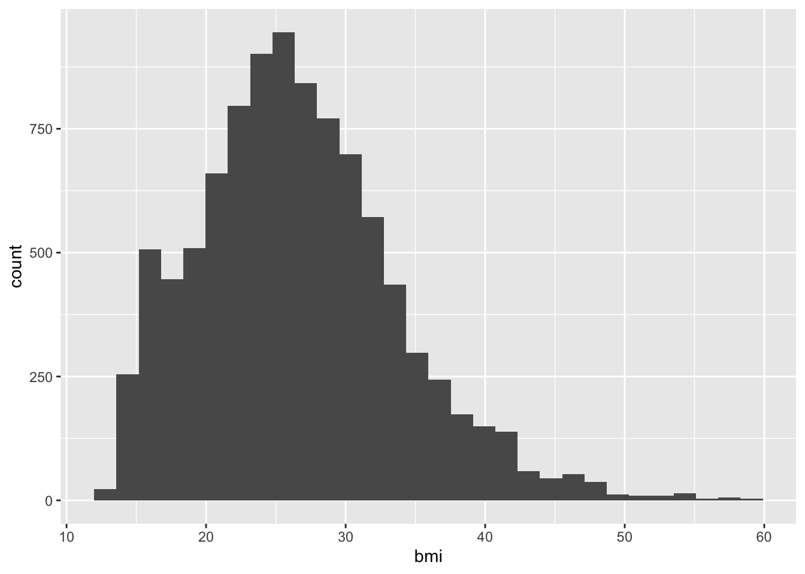

| diabetes | education | max_bmi | min_bmi |
|---|---|---|---|
| No | 8th Grade | 61.01 | 15.98 |
| No | 9 - 11th Grade | 66.96 | 15.70 |
| No | College Grad | 52.34 | 17.10 |
| No | High School | 80.60 | 15.22 |
| No | Some College | 63.30 | 15.02 |
| No | NA | 55.07 | 12.88 |
| Yes | 8th Grade | 52.86 | 21.07 |
| Yes | 9 - 11th Grade | 67.83 | 18.80 |
| Yes | College Grad | 47.70 | 20.60 |
| Yes | High School | 81.25 | 15.86 |
| Yes | Some College | 68.63 | 20.70 |
| Yes | NA | 37.68 | 21.80 |
Reproducible documents
- Solène Frapard
- KTH
- SciLifeLab
Introduction
We can use many different kind of setting for a code chunk depending and what we want to show.
Method and results
Analysis
Table of results
Prettier table
It is important to not forget to put a space after the #s to do a title
`summarise()` has grouped output by 'diabetes'. You can override using the
`.groups` argument.| Diabetes Status | Education | Mean Age | Mean BMI |
|---|---|---|---|
| No | 8th grade | 51.8 | 28.8 |
| No | 9 - 11th grade | 46.3 | 28.6 |
| No | College grad | 46.0 | 27.3 |
| No | High school | 46.1 | 28.9 |
| No | Some college | 43.8 | 28.7 |
| Yes | 8th grade | 63.0 | 32.0 |
| Yes | 9 - 11th grade | 61.4 | 33.1 |
| Yes | College grad | 60.6 | 31.3 |
| Yes | High school | 59.6 | 33.8 |
| Yes | Some college | 58.9 | 33.0 |
Discussion
8.10 Inserting figures as files or from R code

Do not put a space between the path and the label. To do this {}, we need to do “option shift 8”. Inside this bracket {}, it is a label, we can then define alignment, size and plenty of parameter. The label allow us to reference the image inside the text.
Cute kitten in Figure 1
In case we need, we can go to help, markdown quick reference
Visualizing data
ggplot(nhanes_small, aes(x = bmi)) +
geom_histogram(na.rm = TRUE)`stat_bin()` using `bins = 30`. Pick better value with `binwidth`.
# In the argument we add different layers to our graph. First, aes() is aesthetic, we add inside the value of the axis. We add a new layer adding "+" and jumping line. The second layer in geometry. Be careful to keep the spaces where there are.#Do not put comment between the headers otherwise it is not recognizing it as headers anymore.
#This will appear under the figure when we render it.
# Do not forget space after definition for the indentation!
#Now we want to remove value over 60 because there is basically no values after that in our previous graph
nhanes_small %>%
filter(bmi<=60) %>%
ggplot(aes(x = bmi)) +
geom_histogram(na.rm = TRUE) #To remove missing values`stat_bin()` using `bins = 30`. Pick better value with `binwidth`.
This is the free text refering to the picture. See Figure 2, here we put the label tha refers to the figure.
Now we want to plot categorical variables, we need to plot the count because it is discreet variables. For exemple let’s plot education.
Discrete variable
nhanes_small %>%
ggplot(aes(x = education)) +
geom_bar()To do a bar plot we need a x aesthetic
nhanes_small %>%
filter(!is.na(diabetes)) %>%
ggplot(aes(x=diabetes)) +
geom_bar()
!is.na(diabetes) is the remove the NA datas prior to plotting
Now we want to try to have two figure size by size, for now we need to have two figures in the same code chunk
nhanes_small %>%
filter(!is.na(diabetes)) %>%
ggplot(aes(x=diabetes)) +
geom_bar()
nhanes_small %>%
filter(!is.na(education)) %>%
ggplot(aes(x=education)) +
geom_bar()
Be very careful with the number of space when doing: fig.subcap: - “Diabetes” - “Education”
Plotting two variables
Plotting two continuous
nhanes_small %>%
ggplot(aes(x = bmi, y = bp_sys_ave)) +
geom_hex(na.rm = TRUE) +
geom_smooth(na.rm = TRUE)`geom_smooth()` using method = 'gam' and formula = 'y ~ s(x, bs = "cs")'The function geom_smooth add a regression line, there is many possibilities around that. To see what’s possible, go to the console and write ?geom_smooth
Two discrete variables
nhanes_small %>%
filter(!is.na(education), !is.na(diabetes)) %>%
ggplot(aes(x = diabetes, fill = education)) +
geom_bar(position = position_dodge())Discrete and continuous variables
nhanes_small %>%
filter(!is.na(diabetes), bmi <= 60) %>%
ggplot(aes(x = diabetes, y = bmi)) +
geom_violin(na.rm = TRUE) +
geom_boxplot(na.rm = TRUE, width=0.1)
Exercise to make plots with one or two variables
library(NHANES)
nhanes_exercise <- NHANES %>%
rename_with(snakecase::to_snake_case) %>%
rename(sex = gender)# Distribution of age
ggplot(nhanes_exercise, aes(x = diabetes_age)) +
geom_density(na.rm = TRUE)
# Distribution of age at diabetes diagnosis
ggplot(nhanes_exercise, aes(x = age)) +
geom_density(na.rm = TRUE)# Number of people who smoke now and are or above 20 years of age,
# removing those with missing smoking status.
nhanes_exercise %>%
filter(age >= 20, !is.na(smoke_now)) %>%
ggplot(aes(x = smoke_now)) +
geom_bar()# BMI in relation to mean arterial pressure
nhanes_exercise %>%
mutate(mean_arterial_pressure = (bp_sys_ave + (2 * bp_dia_ave)) / 3) %>%
ggplot(aes(x = bmi, y = mean_arterial_pressure)) +
geom_hex(na.rm = TRUE) +
geom_smooth()`geom_smooth()` using method = 'gam' and formula = 'y ~ s(x, bs = "cs")'Warning: Removed 1513 rows containing non-finite values (`stat_smooth()`).```